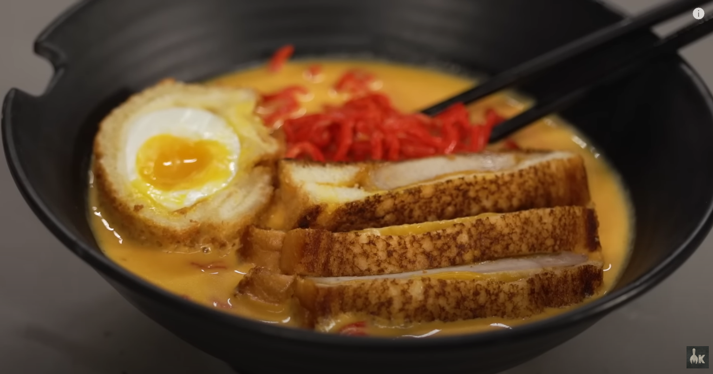

Grilled Cheese Ramen

Description
Grilled Cheese Ramen is another delectable fusion dish that combines the comforting flavors of grilled cheese and the savory goodness of ramen noodles.
This innovative recipe takes the classic grilled cheese sandwich to a whole new level by incorporating ramen noodles and creating a crispy, cheesy, and flavorful delight.
Ingredients
- 400g bread flour
- 4 g salt
-
- 1 g tomato powder
- 80 g water
- 85 g tomato sauce
- liquid red food dye
- 1/3 cup dehydrated cheddar cheese powder
- 2 oz jack cheese
- 2 oz american cheese
- 4 oz mild cheddar cheese
- 2 cups milk
- 1/4 cup cream
- 2 cups water
- 1 pork bouillon cube
- 1 tbps MSG
- salt to taste
- white pepper to taste
Steps
- Bake baking soda in a sheet tray to alkalize it. Remove from sheet and put into the bowl.
- Add 8 g baking soda, tomato sauce, water, tomato powder, red food dye, salt and flour.
- Knead until a firm dough is made. Store in fridge.
- Remove from fridge and roll out on pasta sheeter.
- Roll through spaghetti cutter.
- Flour the sheet pan and noodles. Set aside until ready to use.
- Heat up milk, cream and water in a large pot.
- Add bullion cube and MSG. Whisk and add cheeses + cheese powder.
- Cook until thickened. Stick blend if lumpy.
- Add eggs to cold pot with a pinch of salt. Boil for 5 minutes.
- Add eggs to cold water with ice. Remove from water and shell your eggs.
- Roll out white bread with rolling pin. Dip egg in batter.
- Cover egg in rolled out bread. Roll in panko.
- Fry until golden brown.
- Boil noodles for about 2 minutes.
- While noodles are boiling, spoon your broth into a bowl.
- Slice the egg and grilled cheese and be sure to cut off the crusties.
- Strain noodles and place in a bowl.Add the egg and grilled cheese.
- ENJOY!